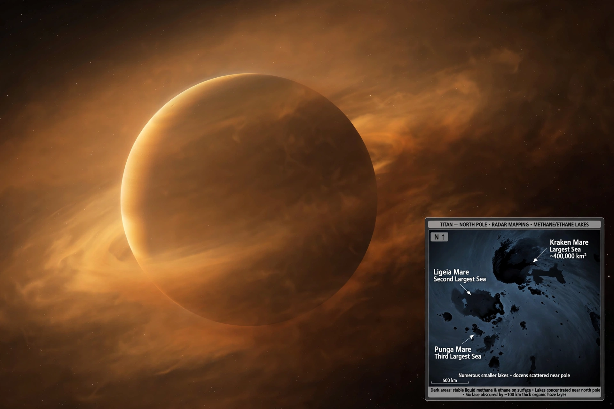

From Wikipedia, the free encyclopedia
| Titan (moon) | |
|---|---|
| Planet | Saturn |
| Discovered | 1655, by Christiaan Huygens |
| Diameter | 5,150 km (larger than Mercury) |
| Atmosphere | Thick nitrogen atmosphere; liquid methane lakes |

Titan is the largest moon of Saturn and the second-largest moon in the Solar System, bigger than the planet Mercury. Discovered by Christiaan Huygens in 1655, it is the only moon with a dense atmosphere — a nitrogen-rich orange haze thicker than Earth's — and the only body besides Earth known to have standing liquid on its surface.
Cassini–Huygens found lakes and seas of liquid methane and ethane near Titan's poles, dunes of organic sand, and evidence of a water ocean deep below the icy crust; NASA's planned Dragonfly rotorcraft will explore its surface in the 2030s. Titan contrasts with icy ocean moons such as Enceladus and the target of Europa Clipper.